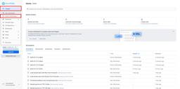
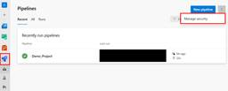

JBS Tech Blog
https://blog.jbs.co.jp/
JBS Tech Blogは、日本ビジネスシステムズ（JBS）の社員が分担して執筆を担当し、技術情報を発信しているブログです！
フィード

Dell Integrated Dell Remote Access Controller(iDRAC)の設定エクスポート/インポート手順 1
1
JBS Tech Blog
本記事では、DellサーバーのIPMIツールであるIntegrated Dell Remote Access Controller(通称 iDRAC)の設定エクスポート/インポート手順について記載します。 複数台のサーバーに対して同じ設定を行う場合や、設定のバックアップとしても活用できます。 前提 設定のエクスポート 設定のインポート 最後に 前提 本手順は、以下のサーバーおよびiDRACバージョンにて実施しています。 PowerEdge R450 iDRAC 9 ver 7.10.70.10 設定のエクスポート iDRACのWebインターフェースにログインします。 「設定」＞「サーバー設定プ…
2日前

【Microsoft×生成AI連載】【OneDrive】ファイル比較機能を実践的に使用できるか検証してみた 1
JBS Tech Blog
【Microsoft×生成AI連載】シリーズです！ 今回は、「Microsoft OneDrive」（以下、OneDrive）でCopilotを使用して、業務で実際に発生しそうなシチュエーションから、実践的なファイル比較ができるかを検証しました。 これまでの連載 OneDriveのCopilot紹介 利用場所 複製したファイルでの比較 レコード数が異なるファイルでの比較 異なるカラム値を含むレコードが存在するファイルでの比較 新旧ファイルでの比較 利用シーンとメリット、注意点 利用シーン メリット 注意点 まとめ おまけ（Copilot Chatによる本記事の要約） これまでの連載 これまでの…
2日前

SnowflakeでSnowparkを動かしてみた 1
JBS Tech Blog
今回は、Snowflake上でSparkに似た構文のコードを使ってストアドプロシージャなどの開発をすることができる、Snowparkを動かしてみました。 Snowflakeについては、以下の記事を参照してください。 blog.jbs.co.jp Snowparkの概要 Snowparkの実行環境 Snowparkの実行 テーブルの表示 列の選択と表示 まとめ Snowparkの概要 Snowflake上で、Sparkに似た構文のコードを実行できる機能のことです。 Pythonworksheet上から実行することができ、データのクレンジングや機械学習を行ったり、UDFやストアドプロシージャの開発…
2日前
Windows起動時にアプリケーションを自動でインストールする 2
JBS Tech Blog
こんにちは！ 今回は、Windows環境でGUIを使わずに、batファイルとps1スクリプトを使用して、起動時にアプリケーションを自動でインストールする方法についてご紹介します。 多くのWindows PCにアプリケーションをインストールする必要がある場合等に活用できると思いますので、ご参考になれば幸いです。 前提 自動インストールの流れ batファイルの準備 ps1スクリプトの準備 全体のコード アプリケーションのインストール有無の確認 インストーラーの実行 インストールの待機処理 イベントログの出力 イベントログ出力結果 タスクスケジューラーによるbatファイルの実行 おわりに 前提 今回…
3日前
【Microsoft×生成AI連載】様々な入口からCopilotの要約と質問機能を使ってみた 1
JBS Tech Blog
本記事では様々な入口からCopilotの要約と質問機能を使ってみて、比較してみます。
4日前
Google Chromeの多要素認証機能を使ってみた 1
JBS Tech Blog
最近は様々なサービスやアプリで多要素認証を求められる機会も増えましたが、多要素認証のためにはスマートフォンが必要なケースが多いです。 そのため、パソコン上で対象のサービスを利用したい場合は、パソコンとスマートフォンの両方を持つ必要がありました。 ですが、今回ご紹介するGoogle Chromeの拡張機能を使用すればパソコンのみで認証が完結するため、スマートフォンが手元になくても認証が可能になります。 本記事では、実際に、Google Chromeの拡張機能にある多要素認証を設定して利用してみたいと思います。 なお、本記事でご紹介しているAuthenticatorの拡張機能は、GoogleやMi…
4日前

Azure DevOpsの権限について調べてみた ~3.各サービスレベルの権限について~ 1
JBS Tech Blog
Azure DevOpsの権限について「組織レベルの権限について」「プロジェクトレベル・リポジトリレベルの権限について」、「各サービスレベルの権限について」の3回に分けて書きたいと思います。 第1回記事では、「組織レベルの権限について」を解説しております。 詳しくは、以下記事をご参照ください。 blog.jbs.co.jp 第2回記事では「プロジェクトレベル・リポジトリレベルの権限について」を解説しております。 詳しくは下記記事をご参照ください。 blog.jbs.co.jp 第3回となる本記事では「各サービスレベルの権限について」を解説していきます。 Azure DevOpsのサービスについ…
5日前
AWS Systems Managerのセッションマネージャーおよびフリートマネージャーを使用してEC2インスタンスに接続してみる 1
JBS Tech Blog
本記事では、AWS Systems Managerの機能であるセッションマネージャーおよびフリートマネージャーを使用して、EC2インスタンスに接続する手順について記載いたします。 セッションマネージャーとは フリートマネージャーとは 前提条件 作業概要 作業手順 AWS Systems ManagerのセッションマネージャーからのEC2インスタンス接続 EC2コンソールからのEC2インスタンス接続 AWS Systems ManagerのフリートマネージャーからのEC2インスタンス接続 まとめ セッションマネージャーとは セッションマネージャーは、AWS Systems Managerの機能の…
5日前

【Microsoft Fabric】パイプラインによるデータ処理の自動化と通知設定 前編
JBS Tech Blog
Microsoft Fabric（以降、Fabricと記載）は、データの収集や処理、変換、リアルタイム分析、レポート作成などの機能を統合した企業向けのSaaS型プラットフォームです。 今回は、試用版のFabricを使用して、データの取得、加工、ウェアハウスへの格納を自動化するパイプラインの構築とパイプライン実行完了時にOutlookへ通知する方法を前編・後編に分けて紹介します。 データの準備 レイクハウスの作成 パイプラインによるデータの取り込み ウェアハウスの作成 データフローによるデータの加工 データフローへのインポート データの加工 データ加工後の同期先設定 まとめ データの準備 今回利…
9日前
【Microsoft×生成AI連載】【やってみた】Copilot Chatのプロンプトギャラリーを使ってみた
JBS Tech Blog
Microsoft 365の生成AIサービス、Business Chatのプロンプトギャラリーを活用し、業務効率を大幅に向上させる方法をご紹介します。使い方から保存・共有の手順まで詳しく解説。
9日前
【Microsoft×生成AI連載】Copilot+ PCで広がるコミュニケーションの可能性 - 聴覚障がい者向けリアルタイム文字起こし利活用事例
JBS Tech Blog
Copilot＋ PCの利活用により広がるコミュニケーションの可能性についての記事
11日前
Power Automate：「アダプティブ カードを投稿して応答を待機する」で応答情報が取得できない場合の対応策
JBS Tech Blog
Power Automateのフローでアダプティブカードを使い、Teams上で回答を取得する方法について説明。エラーの詳細と対応策もご紹介します。
11日前
Microsoft Syntexの構造化抽出モデルの精度を検証する
JBS Tech Blog
日本語PDFドキュメントを対象に、Microsoft Syntexの構造化抽出モデルの精度をテスト。トレーニングしたモデルの詳細な検証結果を解説します。
16日前
【Microsoft×生成AI連載】【Outlook】Microsoft OutlookでのCopilot活用法: 1on1と会議の自動設定・会議アジェンダの自動生成
JBS Tech Blog
【Microsoft×生成AI連載】シリーズの記事です。 本記事では1on1や会議などをセットするときに使う「Microsoft Outlook」（以下、Outlook）で利用可能なCopilotの機能についてご紹介します。 これまでの連携 OutlookのCopilot紹介 Copilotを用いた1on1の自動設定 Copilotが提示するプロンプトを用いる場合 自身でプロンプトを入力する場合 Copilotを用いた会議のアジェンダ作成 利用シーンとメリット、注意点 利用シーン メリット 注意点 まとめ おまけ(BizChatによる本記事の要約) これまでの連携 これまでの連載記事一覧はこち…
16日前
タイタニックの乗客生存予測モデルをFabricで作成してみた。（その１）
JBS Tech Blog
今回は、Kaggleにある「タイタニック号の乗船者データ」から乗客の生存予測モデルを、Microsoft Fabric（以降、Fabric）の機械学習機能を利用して実装します。 前提条件と使用ライブラリ 作業全体の概要 事前準備 分析データのダウンロード レイクハウスの作成 フォルダのインポート Notebookの作成 Notebookとレイクハウスの紐づけ データの理解と可視化 データの理解 データの可視化 まとめ 前提条件と使用ライブラリ 前提条件 Fablic環境は構築済み Pythonの基本的な知識を持っている 使用ライブラリ Panadas NummPy Matplotlib sci…
17日前
Amazon EC2をAWS Systems Managerのフリートマネージャーのマネージドノードとして登録する
JBS Tech Blog
AWS Systems Managerの機能であるフリートマネージャーにAmazon EC2をマネージドノードとして登録しておくと、OSにログインすることなく、リモートでEC2の管理が可能となります。 AWSだけでなく、オンプレミスで実行されているノードに関しても管理が可能です。 本記事では、Amazon EC2をAWS Systems Managerの機能であるフリートマネージャーにマネージドノードとして登録する手順について記載いたします。 前提条件 構成 環境構成図 環境構成情報 手順詳細 EC2インスタンス用のIAMロール作成 EC2インスタンスにIAMロールをアタッチ VPCエンドポイ…
17日前
【Microsoft×生成AI連載】【Word】Microsoft WordのCopilotを使ってみた
JBS Tech Blog
本記事では、Microsoft WordのCopilotについてIgnite2024で発表された新機能を含めた紹介をしています。
18日前
Data Domainを活用したVeeamによる物理Windowsサーバーのイメージバックアップとリストア 第3弾 実践編
JBS Tech Blog
本記事では Data Domain と Veeam backup & replication を連携し物理 Windows Server 2022のイメージバックアップとリストアの手順について3回に分けて紹介します。今回は、物理 Windows Server のイメージバックアップとリストア手順について紹介いたします。
19日前
【Google Workspace】管理対象外アカウントの管理方法について
JBS Tech Blog
Google Workspaceを新規導入する際に、ユーザー個人が会社メールアドレスを使用してGoogleアカウントを作成していることがあります。（本記事ではこのようなテナントに紐づかないアカウントを「管理対象外カウント」と呼びます） 本記事では、管理対象外アカウントをGoogle Workspaceテナントに引き込むための手法、動作を解説します。 概要 対処方法 管理対象外アカウントを管理対象アカウントに置き換える 管理対象外アカウントを管理対象アカウントに置き換えない ユーザーを招待して、管理対象外アカウントから管理対象アカウントに移行する 管理対象外アカウントを管理対象のアカウントに置き…
19日前
Data Domain を活用した Veeam による物理 Windows サーバーのイメージバックアップとリストア 第2弾 Veeamの初期セットアップ編
JBS Tech Blog
本記事では Data Domain と Veeam backup & replication を連携し物理 Windows Server 2022のイメージバックアップとリストアの手順について3回に分けて紹介します。今回は、Veeam の初期セットアップとDDとの連携について紹介いたします。
20日前
Azure AI Agent Service SDKを使用してマルチエージェントAIを実現する
JBS Tech Blog
Microsoft Ignite 2024で、マルチエージェントAIをAzure基盤上で実現できる機能が発表されました。本記事ではAzure AI Agent Service SDKをPythonで使用する方法について、具体的なコードを交えながら解説します。
22日前